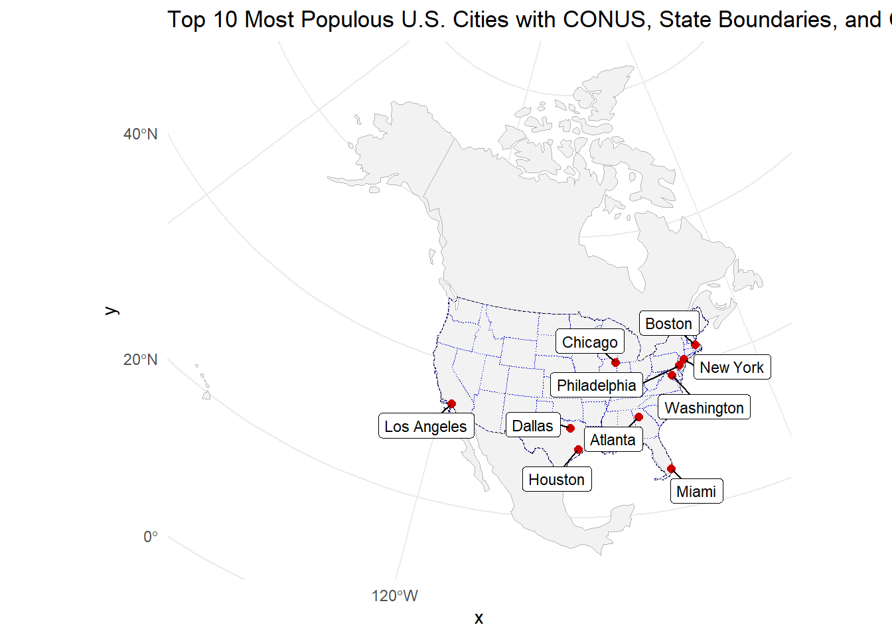
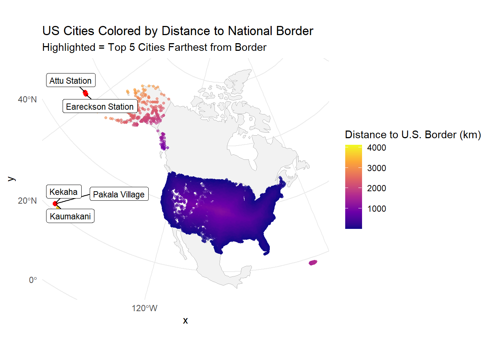
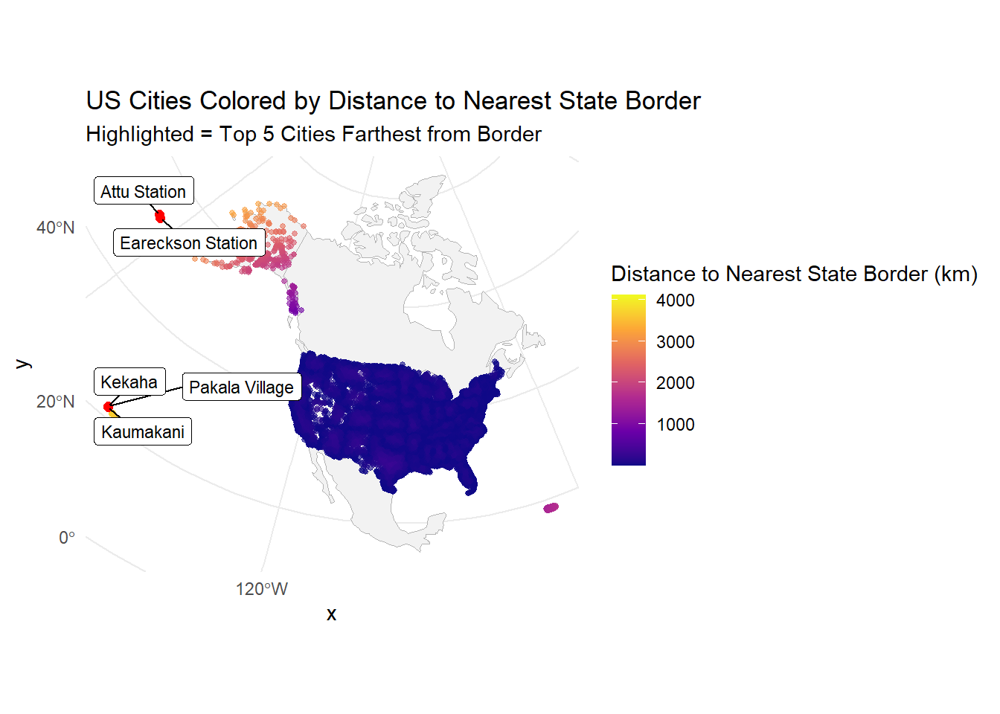
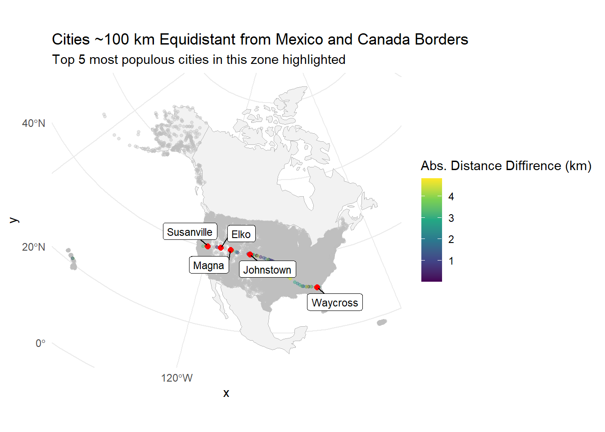
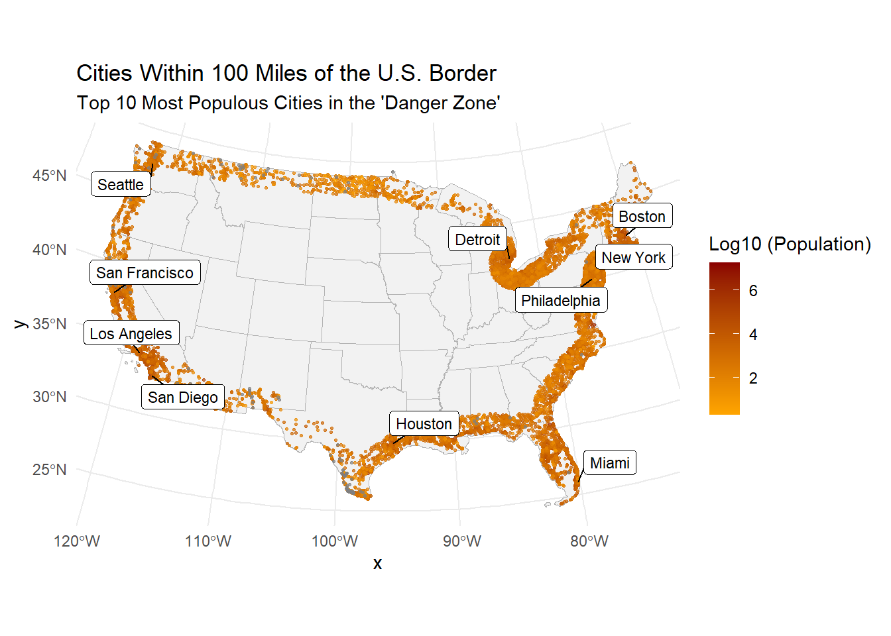

# 1.1. Define a Projectioneqdc <-'+proj=eqdc +lat_0=40 +lon_0=-96 +lat_1=20 +lat_2=60 +x_0=0 +y_0=0 +datum=NAD83 +units=m +no_defs'# 1.2. Get US state boundariesstate_boundaries <-aoi_get(state ='conus')state_eqdc <-st_transform(state_boundaries, crs = eqdc)# 1.3. Get country boundaries country_boundaries <-aoi_get(country =c("MX", "CA", "USA"))country_eqdc <-st_transform(country_boundaries, crs = eqdc)
# 1.4. city locations from csvcity_locations <- readr::read_csv("data/uscities.csv")
Rows: 31254 Columns: 17
── Column specification ────────────────────────────────────────────────────────
Delimiter: ","
chr (9): city, city_ascii, state_id, state_name, county_fips, county_name, s...
dbl (6): lat, lng, population, density, ranking, id
lgl (2): military, incorporated
ℹ Use `spec()` to retrieve the full column specification for this data.
ℹ Specify the column types or set `show_col_types = FALSE` to quiet this message.
# 3.1. Datalibrary(ggthemes)conus_states <- state_eqdc %>%filter(!state_abbr %in%c("AK", "HI", "PR"))conus_outline <-st_union(conus_states)largest_US_cities <- cities_proj %>%filter(!state_id %in%c("AK", "HI", "PR")) %>%arrange(desc(population)) %>%slice_head(n =10)ggplot() +geom_sf(data = country_eqdc, fill ="gray95", color ="gray70", lty ="solid", size =0.3) +geom_sf(data = conus_outline, fill =NA, color ="black", lty ="dashed", size =1) +geom_sf(data = state_eqdc, fill =NA, color ="blue3", lty ="dotted", size =0.4) +geom_sf(data = largest_US_cities, size =2, color ="red3") + ggrepel::geom_label_repel(data = largest_US_cities,aes(label = city, geometry = geometry),stat ="sf_coordinates",size =3,box.padding =0.3,min.segment.length =0) +theme_minimal() +labs(title ="Top 10 Most Populous U.S. Cities with CONUS, State Boundaries, and Country Boundaries", )

# 3.2. City Distance from the Borderfarthest_cities <- cities_proj %>%arrange(desc(dist_to_us_border_km)) %>%slice_head(n =5)ggplot() +geom_sf(data = country_eqdc, fill ="gray95", color ="gray70", lty ="solid", size =0.3) +geom_sf(data = cities_proj, aes(color = dist_to_us_border_km), size =1, alpha =0.6) +geom_sf(data = farthest_cities, color ="red", size =2) +geom_label_repel(data = farthest_cities,aes(label = city, geometry = geometry),stat ="sf_coordinates",min.segment.length =0,box.padding =0.3,size =3,color ="black" ) +scale_color_viridis_c(name ="Distance to U.S. Border (km)",option ="plasma" ) +theme_minimal() +labs(title ="US Cities Colored by Distance to National Border",subtitle ="Highlighted = Top 5 Cities Farthest from Border" )

# 3.3. City distance from nearest states borderfar_cities_to_state <- cities_proj %>%arrange(desc(dist_to_state_border_km)) %>%slice_head(n =5)ggplot() +geom_sf(data = country_eqdc, fill ="gray95", color ="gray70", lty ="solid", size =0.3) +geom_sf(data = cities_proj, aes(color = dist_to_state_border_km), size =1, alpha =0.6) +geom_sf(data = far_cities_to_state, color ="red", size =2) +geom_label_repel(data = far_cities_to_state,aes(label = city, geometry = geometry),stat ="sf_coordinates",min.segment.length =0,box.padding =0.3,size =3,color ="black" ) +scale_color_viridis_c(name ="Distance to Nearest State Border (km)",option ="plasma" ) +theme_minimal() +labs(title ="US Cities Colored by Distance to Nearest State Border",subtitle ="Highlighted = Top 5 Cities Farthest from Border" )

# 3.4. Equidistance boundary from Mexico and Canadacities_proj$abs_diff_km <-abs(cities_proj$dist_to_mexico_km - cities_proj$dist_to_canada_km)zone_cities <- cities_proj |>filter(abs_diff_km <5)top_5_zone <- zone_cities |>arrange(desc(population)) |>slice_head(n =5)ggplot(data = cities_proj) +geom_sf(data = country_eqdc, fill ="gray95", color ="gray70", lty ="solid", size =0.3) +geom_sf(aes(color = abs_diff_km), size =1, alpha =0.4) +gghighlight(abs_diff_km <5, label_key = city, use_direct_label =FALSE) +geom_sf(data = top_5_zone, color ="red", size =2) +geom_label_repel(data = top_5_zone,aes(label = city, geometry = geometry),stat ="sf_coordinates",box.padding =0.3,min.segment.length =0,size =3 ) +scale_color_viridis_c(name ="Abs. Distance Diffirence (km)") +labs(title ="Cities ~100 km Equidistant from Mexico and Canada Borders",subtitle ="Top 5 most populous cities in this zone highlighted", ) +theme_minimal()
Warning: Could not calculate the predicate for layer 1; ignored

Question 4.
# 4.1. Quantifying Border Zone border_threshold_km <-160cities_in_border_zone <- cities_proj %>%filter(dist_to_us_border_km <= border_threshold_km)total_cities <-nrow(cities_proj)total_population <-sum(cities_proj$population, na.rm =TRUE)n_cities_in_zone <-nrow(cities_in_border_zone)pop_in_zone <-sum(cities_in_border_zone$population, na.rm =TRUE)pct_in_zone <- (pop_in_zone / total_population) *100aclu_estimate <-65matches_aclu <-abs(pct_in_zone - aclu_estimate) <=5border_zone_summary <- tibble::tibble(Metric =c("# cities within 100 miles of U.S. border","Population in 100-mile zone","Total U.S. city population in dataset","Percentage of population in zone","Matches ACLU estimate (~65%)" ),Value =c(format(n_cities_in_zone, big.mark =","),format(pop_in_zone, big.mark =","),format(total_population, big.mark =","),paste0(round(pct_in_zone, 1), "%"),ifelse(matches_aclu, "Yes", "No") ))flextable(border_zone_summary) %>%autofit() %>%set_caption("Table of U.S. Cities Within 100-Mile Border Zone (160 km)")
Metric
Value
# cities within 100 miles of U.S. border
9,813
Population in 100-mile zone
216,043,045
Total U.S. city population in dataset
402,301,854
Percentage of population in zone
53.7%
Matches ACLU estimate (~65%)
No
# 4.2. Mapping Border Zonedanger_zone <- cities_proj %>%filter(dist_to_us_border_km <=160.934)top_10_danger <- danger_zone %>%arrange(desc(population)) %>%slice_head(n =10)ggplot() +geom_sf(data = state_eqdc, fill ="gray95", color ="gray70", lty ="solid", size =0.3) +geom_sf(data = danger_zone, aes(color =log10(population)), size = .5, alpha =0.7) +gghighlight(TRUE, use_direct_label =FALSE) +geom_label_repel(data = top_10_danger,aes(label = city, geometry = geometry),stat ="sf_coordinates",size =3,min.segment.length =0,box.padding =0.3 ) +scale_color_gradient(low ="orange", high ="darkred", name ="Log10 (Population)") +labs(title ="Cities Within 100 Miles of the U.S. Border",subtitle ="Top 10 Most Populous Cities in the 'Danger Zone'" ) +theme_minimal()

summary(cities_proj$population)
Min. 1st Qu. Median Mean 3rd Qu. Max.
0.000e+00 2.702e+02 9.480e+02 1.287e+04 3.761e+03 1.883e+07